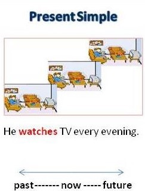

<!-- We don't need full layout here, because this page will be parsed with Ajax-->
<!-- Top Navbar-->

<div class="pages">
  <!-- Page, data-page contains page name-->
  <div data-page="about" class="page">
    <!-- Scrollable page content-->
    <div class="page-content">
      <div class="navbar">
  <div class="navbar-inner">
    <div class="left"><a href="#" class="back link"> <i class="icon icon-back"></i><span>Back</span></a></div>
    <div class="center sliding">Present Simple</div>
    <div class="right">
      <!-- Right link contains only icon - additional "icon-only" class--><a href="#" class="link icon-only open-panel"> <i class="icon icon-bars"></i></a>
    </div>
  </div>
</div>
      <div class="content-block presentcon">
    
    <div class="row no-gutter">
        <div class="col-100">


        </div>
    </div>
We use the present simple to talk about actions we see as long term or permanent. It is a very common and very important tense.
<h2>Examples</h2>

<ul>
<li>They drive to the office every day.</li>
<li>She doesn't come here very often.</li>
<li>The news usually starts at 6.00 every evening.</li>
<li>Do you usually have bacon and eggs for breakfast?</li>
</ul>

      </div>
    </div>
  </div>
</div>